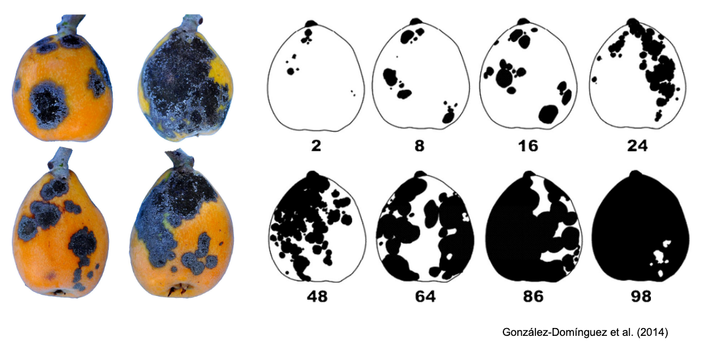
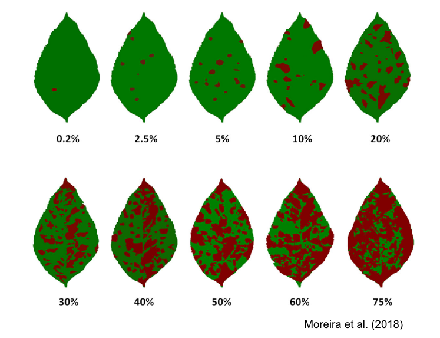
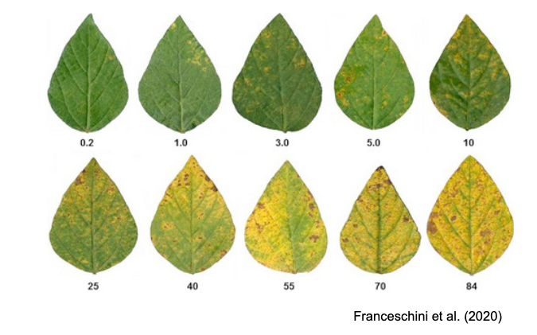
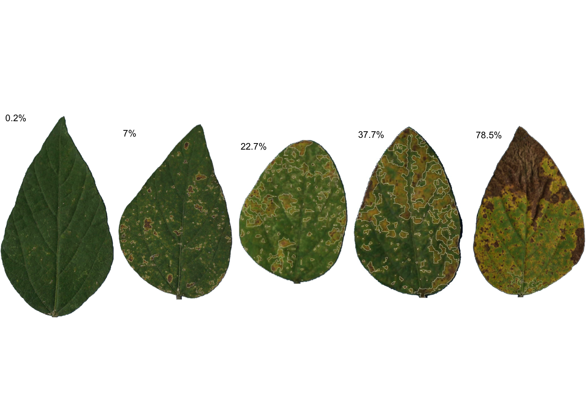
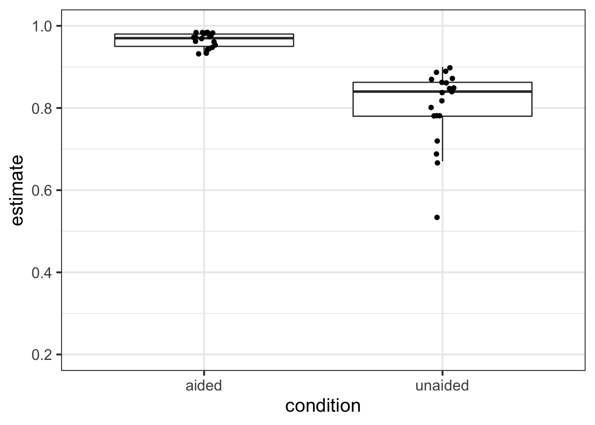
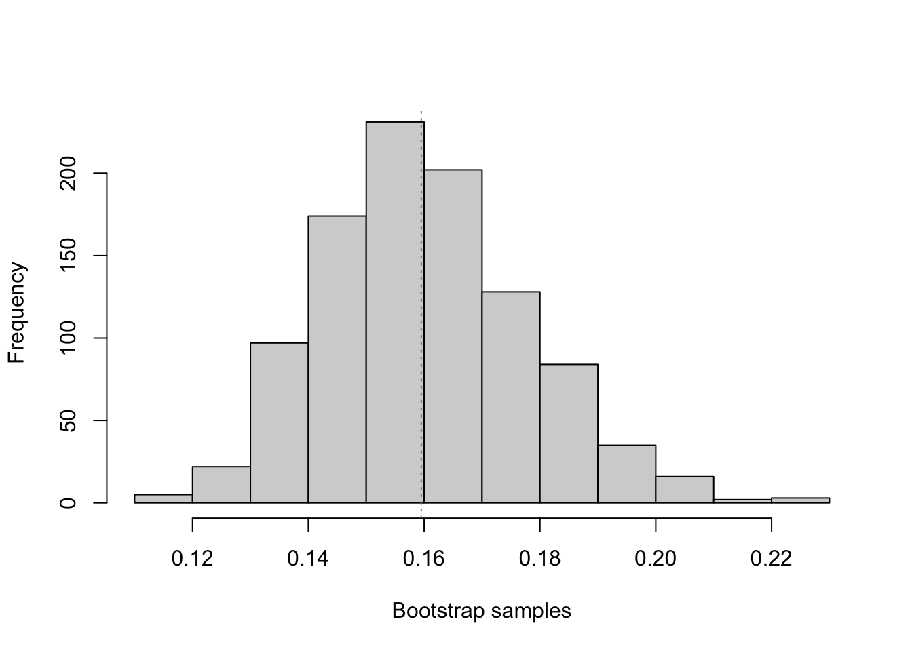
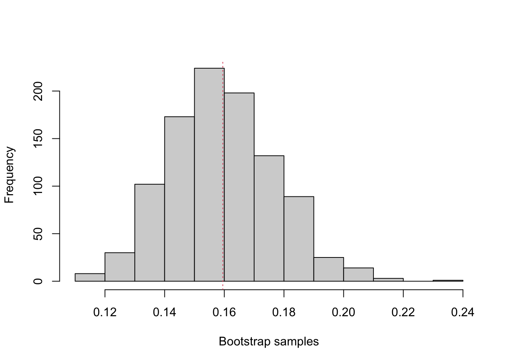
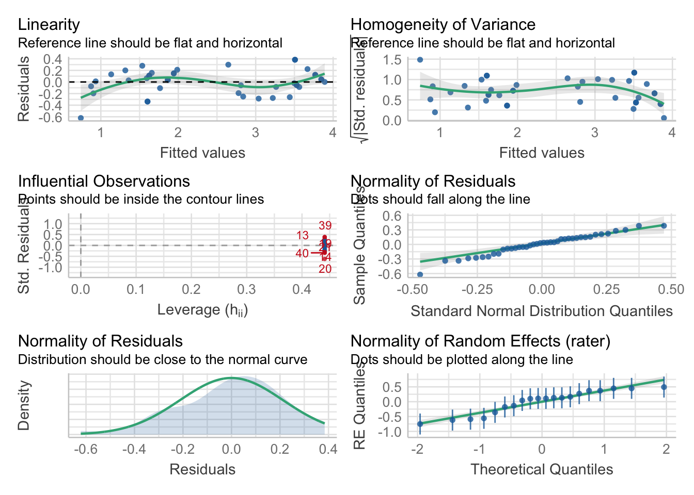
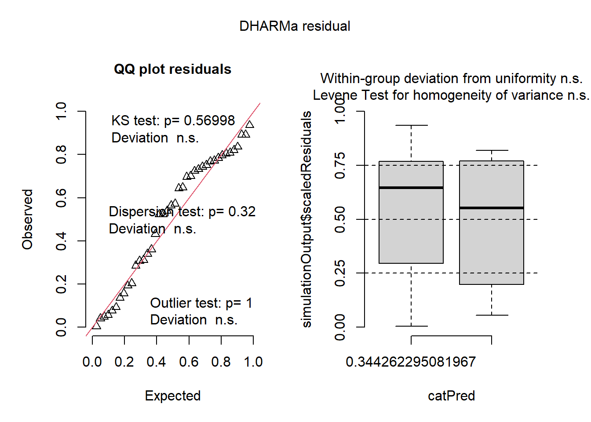

library(pliman)
h <- image_import("imgs/sbr_h.png")
s <- image_import("imgs/sbr_s.png")
b <- image_import("imgs/sbr_b.png")
sbr <- measure_disease(
pattern = "img",
dir_original = "imgs/originals" ,
dir_processed = "imgs/processed",
save_image = TRUE,
img_healthy = h,
img_symptoms = s,
img_background = b,
show_original = FALSE, # set to TRUE for showing the original.
col_background = "white",
verbose = FALSE,
plot = FALSE
)6 Standard area diagrams
6.1 Definitions
According to a glossary on phytopathometry (Bock et al. 2021), standard area diagram (SAD) can be defined as “a generic term for a pictorial or graphic representation (drawing or true-color photo) of selected disease severities on plants or plant parts (leaves, fruit, flowers, etc.) generally used as an aid for more accurate visual estimation (on the percentage scale) or classification (using an ordinal scale) of severity on a specimen”.
The Standard Area Diagrams (SADs), also known as diagrammatic scales, have a long history of use in plant pathology. The concept dates back to the late 1800s when the Cobb scale was developed, featuring five diagrams depicting a range of severity levels of rust pustules on wheat leaves.
In the past 20 years, plant pathologists have leveraged advancements in image processing and analysis tools, along with insights from psychophysical and measurement sciences, to develop SADs that are realistic (e.g., true-color photographs), validated, and depict severities that maximize estimation accuracy. SADs have been created in various color formats (black or white, two-color, or true-color) and with varying incremental scales (approximated linear or logarithmic) (Del Ponte et al. 2017).
SADs have proven beneficial in increasing the accuracy of visual estimates, as estimating percentage areas is generally more challenging than classifying severity into ordinal classes - there are numerous possibilities on the percentage scale, compared to the finite and small number of classes in ordinal scales. A recent quantitative review confirmed that using SADs often results in improved accuracy and precision of visual estimates. However, it also identified factors related to SAD design and structure, disease symptoms, and actual severity that affected the outcomes. In particular, SADs have shown greater utility for raters who are inherently less accurate and for diseases characterized by small and numerous lesions (Del Ponte et al. 2022). Here are examples of SADs in black and white, two-color, and true-color formats:



More SADs can be found in the SADBank, a curated collection of articles on SAD development and validation. Click on the image below to get access to the database.
6.2 SAD development and validation
A systematic review of the literature on SADs highlighted the most important aspects related with the development and validation of the tool (Del Ponte et al. 2017). A list of best practices was proposed in the review to guide future research in the area. Follows the most important aspects to be noted:
Best practices on SADs development
Sample a minimum number (e.g., n = 100) of specimens from natural epidemics representing the range of disease severity and typical symptoms observed.
Use reliable image analysis software to discriminate disease symptoms from healthy areas to calculate percent area affected.
When designing the illustrations for the SAD set, ensure that the individual diagrams are prepared realistically, whether line drawn, actual photos, or computer generated.
The number of diagrams should be no less than 6 and no more than 10, distributed approximately linearly, and spaced no more than 15% apart. Additional diagrams (±2) should be included between 0 and 10% severity.
For the validation trial, select at least 50 specimens representing the full range of actual severity and symptom patterns.
When selecting raters (a minimum of 15) for validation, make sure they do not have previous experience in using the SAD under evaluation.
Provide standard instructions on how to recognize the symptoms of the disease and how to assess severity, first without and then with the SAD.
Ideally repeat the assessment in time, with a 1- or 2-week interval, both without and with the aid, using the same set of raters in order to evaluate the effect of training and experience on gains in accuracy.
Both pre- and posttest experiment conditions should be the same to avoid any impact of distraction on accuracy of estimates during the tests.
6.3 Designing SADs in R
The diagrams used in a set have been developed using various methods and technologies, ranging from hand-drawn diagrams to actual photographs (Del Ponte et al. 2017). There is an increasing trend towards using actual photos that are digitally analyzed using standard image analysis software to determine the percent area affected. With this approach, a large set of images is analyzed, and some images are chosen to represent the severities in the SAD according to the scale structure.
In R, the pliman package has a function called sad() which allows the automatic generation of a SADs with a pre-defined number of diagrams. Firstly, as shown in the previous chapter, the set of images to be selected needs to be analysed using the measure_disease() function. Then, a SADs is automatically generated. In the function, the specimens with the smallest and highest severity will be selected for the SAD. The intermediate diagrams are sampled sequentially to achieve the pre-defined number of images after the severity has been ordered from low to high. More details of the function here.
Let’s use the same set of 10 soybean leaves, as seen in the previous chapter, depicting the rust symptoms and create the sbr object.
We are ready to run the sad() function to create a SADs with five diagrams side by side. The resulting SADs is in two-color as standard. Set the argument show_original to TRUE for showing the orignal image in the SADs.
sad(sbr, 5, ncol = 5)
6.4 Analysis of SADs validation data
To evaluate the effect of SAD on accuracy components, analyze the data, preferably using concordance analysis methods (see chapter), to fully explore which component is affected and to gain insight into the ramification of errors. Linear regression should not be used as the sole method but it could be complementary for comparison with previous literature.
Inferential methods should be used for testing hypotheses related to gain in accuracy. If parametric tests are used (paired t-test for example), make sure to check that the assumptions are not violated. Alternatively, nonparametric tests (Wilcoxon signed rank) or nonparametric bootstrapping should be used when the conditions for parametric tests are not met. More recently, a (parametric) mixed modelling framework has been used to analyse SADs validation data where raters are taken as a random effects in the model (Franceschi et al. 2020; González-Domínguez et al. 2014; Pereira et al. 2020).
6.4.1 Non parametric boostrapping of differences
Bootstrap is a resampling method where large numbers of samples of the same size are repeatedly drawn, with replacement, from a single original sample. It is commonly used when the distribution of a statistic is unknown or complicated and the sample size is too small to draw a valid inference.
A bootstrap-based equivalence test procedure was first proposed as complementary to parametric (paired t-test) or non-parametric (Wilcoxon) to analyze severity estimation data in a study on the development and validation of a SADs for pecan scab (Yadav et al. 2012). The equivalence test was used to calculate 95% confidence intervals for each statistic by bootstrapping using the percentile method (with an equivalence test, the null hypothesis is the converse of H0, i.e. the null hypothesis is non-equivalence). In that study, the test was used to compare means of the CCC statistics across raters under two conditions: 1) without versus with the SAD; and 2) experienced versus inexperienced raters.
To apply the bootstrap-based equivalence test, let’s work with the CCC data for a sample of 20 raters who estimated severity of soybean rust SAD first without and then with the aid. The CCC was calculated as shown here.
library(tidyverse)
library(r4pde)
sbr <- tibble::tribble(
~rater, ~aided, ~unaided,
1, 0.97, 0.85,
2, 0.97, 0.85,
3, 0.95, 0.82,
4, 0.93, 0.69,
5, 0.97, 0.84,
6, 0.96, 0.86,
7, 0.98, 0.78,
8, 0.93, 0.72,
9, 0.94, 0.67,
10, 0.95, 0.53,
11, 0.94, 0.78,
12, 0.98, 0.89,
13, 0.96, 0.8,
14, 0.98, 0.87,
15, 0.98, 0.9,
16, 0.98, 0.87,
17, 0.98, 0.84,
18, 0.97, 0.86,
19, 0.98, 0.89,
20, 0.98, 0.78
)Let’s visualize the data using boxplots. Each point in the plot represents a rater.
theme_set(theme_r4pde())
sbr |>
pivot_longer(2:3, names_to = "condition", values_to ="estimate") |>
ggplot(aes(condition, estimate))+
geom_boxplot(outlier.colour = NA)+
geom_jitter(width = 0.05, size = 2, alpha = 0.5)+
theme_r4pde()+
ylim(0.4,1)
To proceed with bootstrapping, we first create a new variable to hold the differences between the means of the estimates (aided minus unaided). If the 95% CI does not include zero, this means that there was a significant improvement in the statistics.
# diff of means
sbr$diff <- sbr$aided - sbr$unaided
sbr |>
ggplot(aes(x= diff))+
theme_r4pde()+
geom_histogram(bins = 10, color = "white")
Using the simpleboot and boot packages of R:
library(simpleboot)
b.mean <- one.boot(sbr$diff, mean, 999)
boot::boot.ci(b.mean)Warning in boot::boot.ci(b.mean): bootstrap variances needed for studentized
intervalsBOOTSTRAP CONFIDENCE INTERVAL CALCULATIONS
Based on 999 bootstrap replicates
CALL :
boot::boot.ci(boot.out = b.mean)
Intervals :
Level Normal Basic
95% ( 0.1226, 0.1950 ) ( 0.1195, 0.1915 )
Level Percentile BCa
95% ( 0.1275, 0.1995 ) ( 0.1285, 0.2020 )
Calculations and Intervals on Original Scalemean(b.mean$data)[1] 0.1595hist(b.mean)
Using the bootstrap package:
library(bootstrap)
b <- bootstrap(sbr$diff, 999, mean)
quantile(b$thetastar, c(.025,.975)) 2.5% 97.5%
0.127975 0.197500 mean(b$thetastar)[1] 0.1591947sd(b$thetastar)[1] 0.01803024se <- function(x) sqrt(var(x)/length(x))
se(b$thetastar)[1] 0.0005704516Both procedures shown above have led to similar results. The 95% CIs of the differences did not include zero, so a significant improvement in accuracy can be inferred.
6.4.2 Parametric and non-parametric paired sample tests
When two estimates are gathered from the same rater at different times, these data points are not independent. In such situations, a paired sample t-test can be utilized to test if the mean difference between two sets of observations is zero. This test requires each subject (or leaf, in our context) to be measured or estimated twice, resulting in pairs of observations. However, if the assumptions of the test (such as normality) are violated, a non-parametric equivalent, such as the Wilcoxon signed-rank test, also known as the Wilcoxon test, can be employed. This alternative is particularly useful when the data are not normally distributed.
To proceed with these tests, we first need to ascertain whether our data are normally distributed. We should also verify whether the variances are equal. Let’s now apply these two tests to our data and compare the results.
# normality test
shapiro.test(sbr$aided)
Shapiro-Wilk normality test
data: sbr$aided
W = 0.82529, p-value = 0.002111shapiro.test(sbr$unaided)
Shapiro-Wilk normality test
data: sbr$unaided
W = 0.83769, p-value = 0.003338# equal variance test
var.test(sbr$aided, sbr$unaided)
F test to compare two variances
data: sbr$aided and sbr$unaided
F = 0.037789, num df = 19, denom df = 19, p-value = 1.53e-09
alternative hypothesis: true ratio of variances is not equal to 1
95 percent confidence interval:
0.01495720 0.09547109
sample estimates:
ratio of variances
0.03778862 # paired t-test
t.test(sbr$aided, sbr$unaided, paired = TRUE)
Paired t-test
data: sbr$aided and sbr$unaided
t = 8.812, df = 19, p-value = 3.873e-08
alternative hypothesis: true mean difference is not equal to 0
95 percent confidence interval:
0.1216158 0.1973842
sample estimates:
mean difference
0.1595 # Wilcoxon test
wilcox.test(sbr$aided, sbr$unaided, paired = TRUE)Warning in wilcox.test.default(sbr$aided, sbr$unaided, paired = TRUE): cannot
compute exact p-value with ties
Wilcoxon signed rank test with continuity correction
data: sbr$aided and sbr$unaided
V = 210, p-value = 9.449e-05
alternative hypothesis: true location shift is not equal to 0As shown above, the two assumptions were violated, so we could rely more confidently on the non-parametric test.
6.4.3 Mixed effects modeling
Mixed models, also known as mixed effects models or multilevel models, are an extension of traditional linear models that are used for analyzing hierarchical or clustered data. These models are particularly useful when dealing with data where observations may not be fully independent, or when the assumption of independence is violated. This happens, for instance, when data are collected over time from the same individuals or units, or when individuals are grouped or nested within higher-level units, such as in our case where measurements are taken by different raters (Brown 2021).
Mixed models enable us to model both fixed and random effects. Fixed effects represent the usual regression parameters that we are primarily interested in estimating, while random effects model the random variation that occurs at different levels of hierarchy or clustering. They allow us to account for variability among different levels of data, like inter-rater variability or intra-subject variability in repeated measures designs.
In our context, we consider raters as random effects because we view them as a sample drawn from a larger population of potential raters, and our goal is to generalize our findings to this larger population. If we were to sample additional raters, we would expect these new raters to differ from our current ones. However, by considering raters as a random effect in our model, we can account for this inter-rater variability and make more accurate inferences about the overall population.
The random effects component in the mixed model allows us to capture and model the additional variance that is not explicitly accounted for by the fixed effects in our model. In other words, random effects help us to capture and quantify the ‘unexplained’ or ‘residual’ variation that exists within and between the clusters or groups in our data. This could include, for instance, variation in disease measurements that are taken repeatedly from the same subjects. In conclusion, mixed models provide a robust and flexible framework for modeling hierarchical or clustered data, allowing us to effectively account for both fixed and random effects and to make more accurate inferences about our data.
Let’s start reshaping our data to the long format and assign them to a new data frame.
sbr2 <- sbr |>
pivot_longer(2:3, names_to = "condition", values_to = "estimate")Now we fit the mixed model using the lmer function of the lme4 package. We will fit the model to the logit of the estimate because they should be bounded between zero and one. Preliminary analysis using non-transformed or log-transformed data resulted in lack of normality of residuals and heterocedasticity (not shown).
library(lme4)
library(car) # for logit function
mix <- lmer(logit(estimate) ~ condition + (1 | rater), data = sbr2)
# Check model performance
library(performance)
check_normality(mix)OK: residuals appear as normally distributed (p = 0.381).check_heteroscedasticity(mix)OK: Error variance appears to be homoscedastic (p = 0.961).# Check effect of condition
car::Anova(mix)Analysis of Deviance Table (Type II Wald chisquare tests)
Response: logit(estimate)
Chisq Df Pr(>Chisq)
condition 458.44 1 < 2.2e-16 ***
---
Signif. codes: 0 '***' 0.001 '**' 0.01 '*' 0.05 '.' 0.1 ' ' 1# Estimate the means for each group
library(emmeans)
em <- emmeans(mix, ~ condition, type ="response")
em condition response SE df lower.CL upper.CL
aided 0.968 0.00359 25.5 0.959 0.974
unaided 0.817 0.01719 25.5 0.779 0.849
Degrees-of-freedom method: kenward-roger
Confidence level used: 0.95
Intervals are back-transformed from the logit scale # Contrast the means
pairs(em) contrast odds.ratio SE df null t.ratio p.value
aided / unaided 6.72 0.597 19 1 21.411 <.0001
Degrees-of-freedom method: kenward-roger
Tests are performed on the log odds ratio scale # plot the means with 95% CIs
plot(em) +
coord_flip()+
xlim(0.7,1)+
theme_r4pde()
As shown above, we can reject the null hypothesis that the means are the same between the two groups.
Alternatively, we could fit GLMMs - generalized linear mixed models, which extend the traditional linear mixed models to accommodate response variables that follow different distributions. They are particularly useful when the response variable does not follow a normal distribution and cannot be adequately transformed to meet the parametric assumptions of traditional linear models. The glmmTMB package in R provides a convenient and flexible platform to fit GLMMs using a variety of distributions (Brooks et al. 2017).
In our case, considering our response variable bounded between 0 and 1, a Beta distribution might be a suitable choice. Beta distribution is a continuous probability distribution defined on the interval [0, 1], and is commonly used for modelling variables that represent proportions or percentages.
The function glmmTMB() from the glmmTMB package can be used to fit a GLMM with a Beta distribution. In this function, we specify the distribution family as beta_family().
library(glmmTMB)
mix2 <- glmmTMB(estimate ~ condition + (1| rater),
data = sbr2,
family = beta_family())Because the package performance does not handle the glmmTMB output, we will use the DHARMa package in R which can be particularly useful for checking the assumptions of your GLMM fitted with glmmTMB(). The package provides a convenient way to carry out residual diagnostics for models fitted via maximum likelihood estimation, including GLMMs. This package creates standardized residuals from the observed responses and the predicted responses of a fitted model, and then compares these residuals to a simulated set of residuals under a correct model.
library(DHARMa)
plot(simulateResiduals(mix2))
In this example, simulateResiduals() generates simulated residuals from your fitted model, and the plot creates a plot of these residuals. This showed that the residuals from our model are uniformly distributed, which is an assumption of GLMMs. We can now proceed with the posthoc analysis and noticed that the results are similar to when the response variable was transformed to logit.
car::Anova(mix2)Analysis of Deviance Table (Type II Wald chisquare tests)
Response: estimate
Chisq Df Pr(>Chisq)
condition 400.93 1 < 2.2e-16 ***
---
Signif. codes: 0 '***' 0.001 '**' 0.01 '*' 0.05 '.' 0.1 ' ' 1library(emmeans)
em <- emmeans(mix2, ~ condition, type = "response")
em condition response SE df asymp.LCL asymp.UCL
aided 0.967 0.0043 Inf 0.958 0.975
unaided 0.814 0.0167 Inf 0.779 0.845
Confidence level used: 0.95
Intervals are back-transformed from the logit scale # Contrast the means
pairs(em) contrast odds.ratio SE df null z.ratio p.value
aided / unaided 6.71 0.638 Inf 1 20.023 <.0001
Tests are performed on the log odds ratio scale